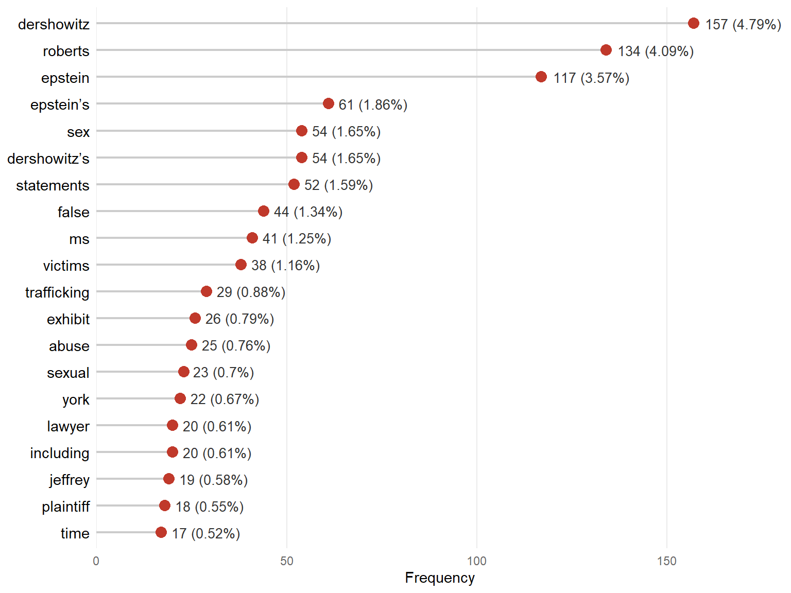
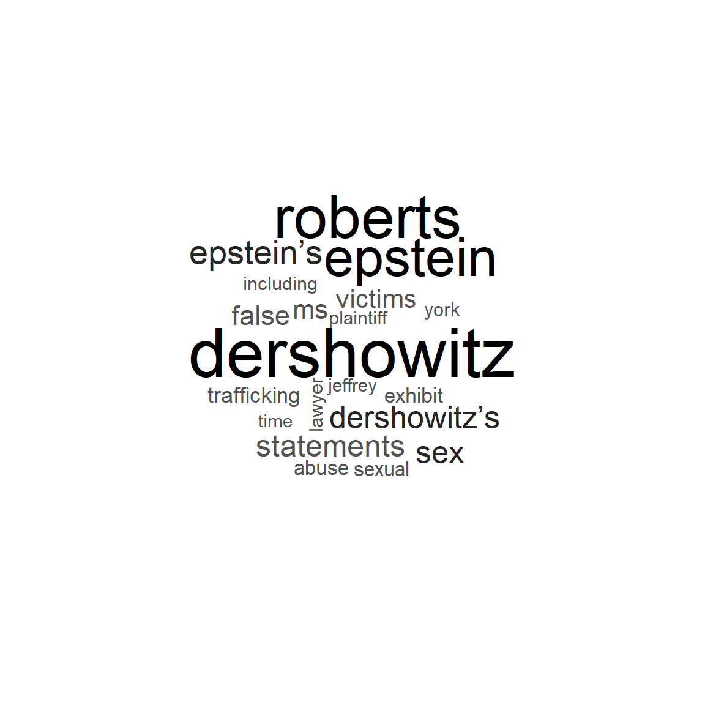
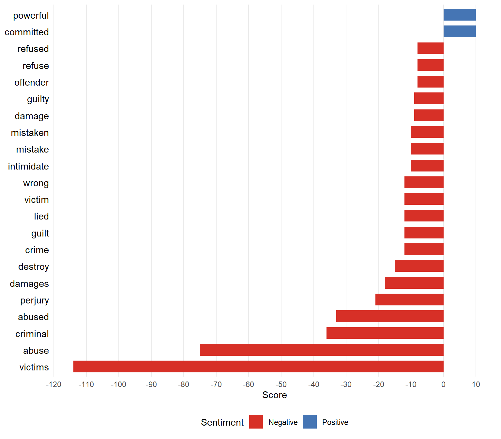
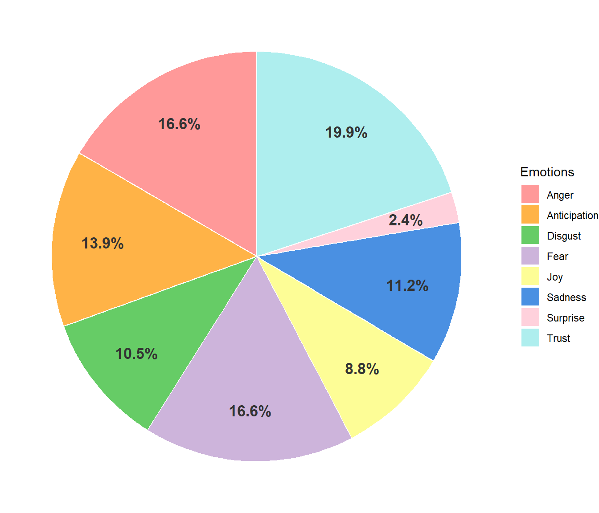
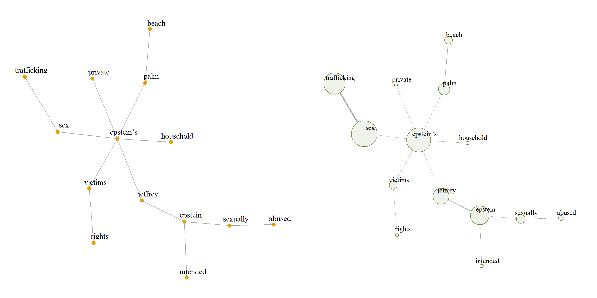
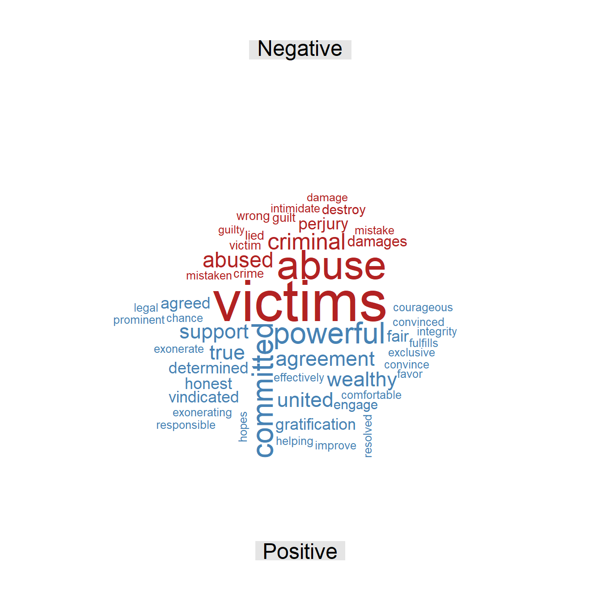
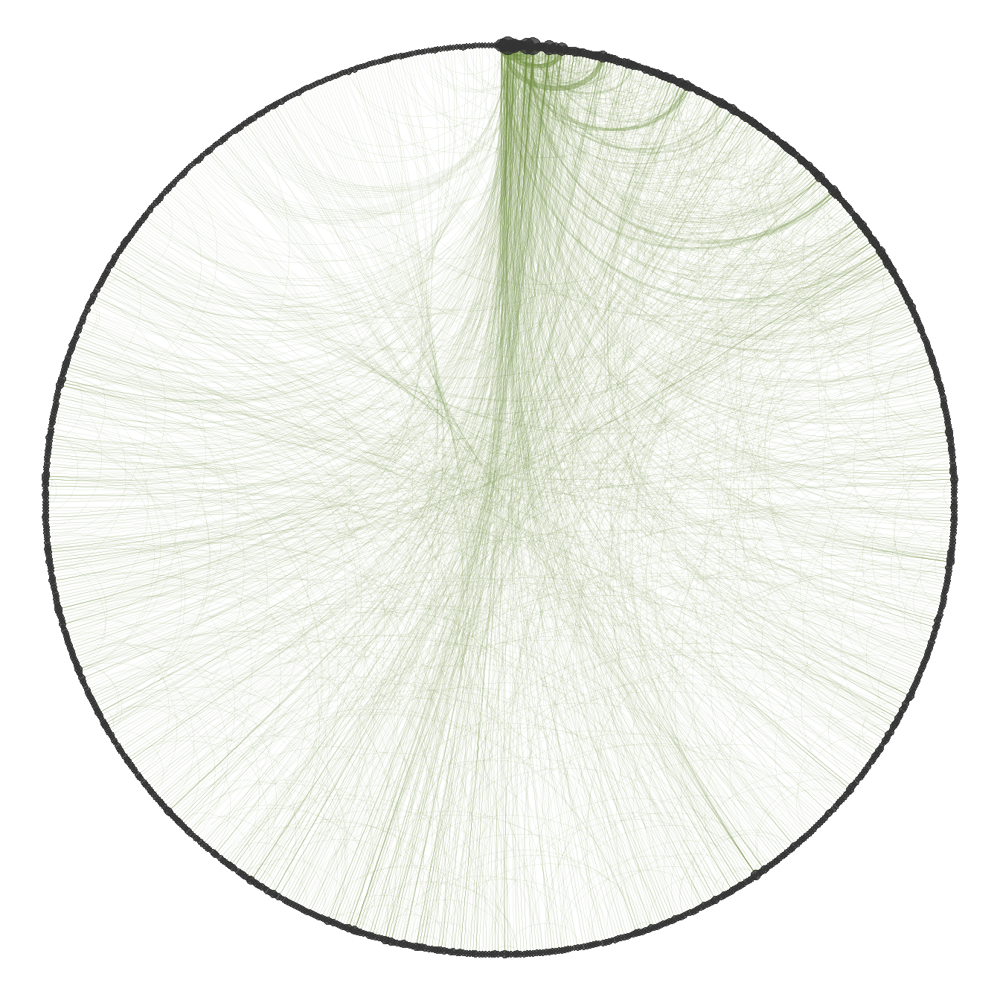
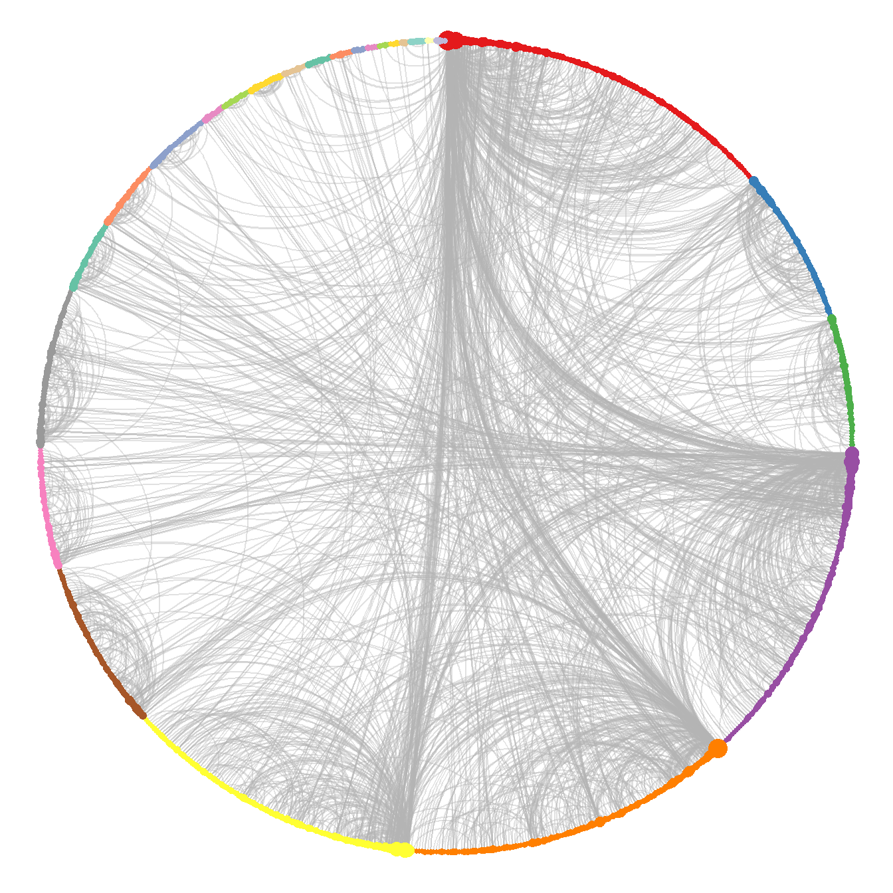

Giuffre v. Dershowitz
Civil complaint filed on April 16, 2019
| Document type | Civil complaint (defamation) |
| Court | U.S. District Court for the Southern District of New York |
| Case number | 1:19-cv-03377 |
| Source | CourtListener |
| Words (cleaned text) | 7,201 |
This legal document is a civil complaint for defamation filed by Virginia Giuffre (formerly known as Virginia Roberts) against the attorney Alan Dershowitz in the U.S. District Court for the Southern District of New York. The plaintiff alleges that, when she was a minor, she was a victim of an international network of sex trafficking and abuse run by Jeffrey Epstein, who, according to the complaint, forced her to have sexual relations with several men, including Dershowitz, described in the complaint as a co-conspirator and close friend of the financier. The complaint argues that the defendant acted in coordination with Epstein and Ghislaine Maxwell to launch a massive media campaign of false and malicious statements in order to brand Giuffre a liar, a perjurer, and an extortionist. According to the plaintiff, Dershowitz sought in this way to cover up his own conduct, destroy the victim’s reputation, and intimidate her into abandoning her work as president of a non-profit organization dedicated to supporting survivors of exploitation. On these grounds, arguing that the statements constitute defamation and libel per se, the plaintiff demands a jury trial and seeks compensatory, consequential, and punitive damages for the psychological harm and the serious damage to her personal and professional reputation. The defendant denies the allegations.
Word frequency
Figure 1 shows that no word has a disproportionate relative frequency compared with the others. The three most frequent terms refer directly to three of the key actors in the complaint: Dershowitz, Roberts, and Epstein. Consistently, other terms referring to the same individuals appear, such as “Epstein’s”, “Dershowitz’s”, “plaintiff”, and “Jeffrey”, which indicates that the thematic axis of this document revolves fundamentally around these three people. Terms closely linked to the alleged offenses also stand out, such as “trafficking”, “abuse”, “false”, and “sex”, from which it can be inferred that a central component of the text is devoted to describing the nature of these offenses. Finally, there are words that, on their own, add little information to the analysis, such as “ms”, “time”, and “lawyer”.
Figure 2 confirms that the three most relevant terms are those referring to the main actors of the complaint. In addition to the terms linked to the alleged offenses, which appear frequently, the term “exhibit” stands out in particular. Its presence indicates that, beyond Giuffre’s account of the alleged offenses (such as sexual abuse, sex trafficking, and defamation), the complaint attaches documentary exhibits to support its statements. This implies that the complaint is built on supporting material that goes beyond the plaintiff’s account.

In conclusion, the frequency analysis shows that the document uses predominantly formal, legal language that avoids graphic descriptions of the abuse. It also reveals a core of three actors, Epstein, Dershowitz, and Giuffre (Roberts), around which most of the information revolves. Beyond the terms related to the alleged offenses, one of the most significant findings of this analysis is the appearance of the term “exhibit”. This shows that the text is not limited to the victim’s testimony, but is structured to support the allegations with documentary evidence.
Sentiment analysis
Figure 3 shows that the word “victims” stands out disproportionately, with a remarkably high score in the negative sentiment category. This indicates that, in the context of the document, it is a term with a high weight, both because of its frequency and because of its negative semantic charge. It also indicates that the text focuses not only on the plaintiff, but also on the alleged victims of this type of violence as a group. Another relevant feature of the negative profile of the text refers to the consequences of suffering these offenses, reflected in terms such as “damages”, “destroy”, “perjury”, and “intimidate”. Finally, there are words directly linked to the alleged acts and to the conduct of those involved, such as “abuse”, “abused”, “lied”, “refuse”, and “refused”, which describe the nature of the facts alleged.

Positive sentiment, on the other hand, is represented by a limited number of terms with very low scores; the only words that stand out are “powerful” and “committed”. This shows that positive sentiment is very weak or even nonexistent, since in the specific context of the document both terms do not necessarily denote positive aspects. On the one hand, the word “powerful” refers to the status and influence attributed to Epstein and Dershowitz, who, according to the complaint, had vast political, economic, and social power that allowed them to act without facing immediate legal consequences. On the other hand, the term “committed” may refer to Giuffre’s commitment to supporting people who have been victims of similar exploitation networks, or to the offenses committed.

Figure 4 shows that the predominant emotions are trust and anticipation, with 20% and 14%, respectively. This can be explained by the fact that one of the aims of the complaint is to redress the effects of the alleged offenses; under this premise, the structure of the text suggests that, beyond dwelling on the abuse, it seeks compensation for the harm. Nevertheless, emotions such as anger and fear, with 16% each, remain prominent in the document. This is due to the nature of an account told from the position of a victim, a context in which these reactions may arise. To a lesser extent, sadness and disgust also appear, which are expected emotions when describing sexual assault. Finally, the least frequent emotions are joy and surprise, which is entirely reasonable given that the text does not evoke them.
The tone of the text is almost entirely negative; positive sentiment is limited to two words that, in the specific context of the document, do not necessarily have a positive connotation. The overall tone is thus negative, complemented by the presence of emotions such as anger, fear, sadness, and disgust. However, despite this generally negative tone, emotions such as trust and anticipation stand out, suggesting an orientation towards seeking justice and full redress of the harm suffered by the victims.
Word relationships
The bigram network was built from the bigrams with a frequency of at least 4, in order to obtain an informative network rather than a noisy one, thus keeping the most relevant information in the text. The analysis uses the largest connected component of the graph, since it concentrates the most relevant information.

As shown in Figure 5, the main connected component of the network does not directly include either the plaintiff or the defendant; instead, the structure revolves around Epstein, who is one of the vertices with the highest strength. This indicates that, although the case is Giuffre against Dershowitz, the figure with the greatest weight in the network is Epstein. The graph also refers to the financier’s properties, specifically his Palm Beach residence, where, according to the complaint, the abuse took place, as well as to the sex trafficking network and his alleged active participation in the abuse. Finally, the reference to the rights of Epstein’s victims stands out, alluding to Giuffre’s work leading a support network and her role as an advocate for the rights of survivors.
The structure of the network shows which of the three main actors has the greatest weight in the text. The presence of Epstein, in contrast with the absence of both the plaintiff and the defendant in the main connected component, is striking; it suggests that the discussion revolves around him, with Dershowitz as an involved actor but of secondary relevance in this network. The analysis also identifies which specific elements are decisive in the narrative, such as places, actions, and key people. Finally, it shows that one of the recurring themes is the defense of the rights of victims, explicitly oriented towards seeking justice and redress.
The skipgram network is built with all pairs, regardless of their frequency, which makes it possible to find semantic relationships that are not perceptible at first sight. The largest connected component is also used, since it contains the most important information and allows the computation of statistics that are not defined on a disconnected graph, such as the mean distance between vertices.
| Word 1 | Word 2 | Freq. | Rel. freq. |
|---|---|---|---|
| Ms | Roberts | 26 | 0.94% |
| Sex | Trafficking | 24 | 0.87% |
| Dershowitz | Epstein | 21 | 0.76% |
| False | Statements | 19 | 0.69% |
| Dershowitz’s | Statements | 18 | 0.65% |
| Jeffrey | Epstein | 13 | 0.47% |
| Dershowitz’s | False | 12 | 0.44% |
| Sexual | Abuse | 12 | 0.44% |
| Alan | Dershowitz | 10 | 0.36% |
| Epstein | Dershowitz’s | 9 | 0.33% |
Table 1 shows the most frequent skipgrams in the text; none of them has a high relative frequency, all of them being below 1%. The analysis shows combinations that refer directly to the three main actors of the complaint, such as “Ms Roberts”, “Alan Dershowitz”, and “Jeffrey Epstein”. Of particular interest is the fact that the third most frequent skipgram is “Dershowitz Epstein”, which shows the strong link between the two men established in the document. Finally, skipgrams closely linked to the alleged offenses stand out, such as “sexual abuse” and “sex trafficking”, which define the thematic cores of the complaint.
| Statistic | Value |
|---|---|
| Mean distance | 4.42 |
| Mean degree | 4.40 |
| SD of degree | 8.97 |
| Clique number | 7.00 |
| Density | 0.00 |
| Transitivity | 0.07 |
| Assortativity | -0.13 |
| Word | Centrality |
|---|---|
| Dershowitz | 1.00 |
| Roberts | 0.94 |
| Epstein | 0.85 |
| Ms | 0.64 |
| Dershowitz’s | 0.59 |
| Statements | 0.56 |
| Sex | 0.55 |
| Trafficking | 0.43 |
| False | 0.42 |
| Lawyer | 0.35 |
Table 2 shows that the mean distance of the network is 4.42; that is, on average, slightly more than four steps are needed to go from one word to another. Being a relatively low value, it suggests a centralized narrative in which the different concepts and actors are quickly interconnected throughout the document. This interconnection is supported by the mean degree of 4.40, meaning that each word is directly connected to more than four different terms on average. However, the standard deviation of the degree is high (8.97) compared with its mean, which reveals great variability: a few words are connected to many others, while most have very few connections. In other words, there are hub words that appear next to many different terms, which points to very marked themes in the text.
Regarding the grouping of words, the clique number is 7, meaning that the largest group of words that are all connected to each other has 7 terms; such a structure usually reflects a frequently repeated central argument or words that always appear together. At the global level, however, the density of the network is close to 0 (it rounds to 0.00), meaning that well under 1% of all possible connections are present; the network is therefore very sparse, as is usual in word networks with a large and varied vocabulary. Consistently with this sparsity, the transitivity is 0.07, so there is only a 7% probability that two words connected to the same term are also connected to each other (forming triangles), which reflects a structure with low cohesion. Finally, the degree assortativity is negative (-0.13), indicating a mild tendency of highly connected words to link with words that have few connections, rather than with other central words.
Table 3 shows the most relevant terms according to eigenvector centrality, where the first five words refer directly to the three main actors of the complaint. This strongly confirms that the narrative unfolds entirely around them. Words closely linked to the alleged false statements and to sex trafficking also appear, which consolidates these conducts as the thematic axes with the greatest weight in the network.
| Cluster | Size | Word | Strength |
|---|---|---|---|
| 1 | 122 | Dershowitz | 259 |
| Epstein | 176 | ||
| Jeffrey | 46 | ||
| 4 | 116 | Epstein’s | 140 |
| Sex | 91 | ||
| Victims | 67 | ||
| 5 | 119 | Roberts | 233 |
| Ms | 91 | ||
| Lawyer | 36 | ||
| 6 | 107 | Dershowitz’s | 120 |
| Statements | 100 | ||
| False | 81 | ||
| 7 | 61 | Roberts’s | 22 |
| Public | 21 | ||
| Reputation | 16 |
Table 4 presents the words with the highest strength in the five largest clusters obtained with the fast greedy algorithm. The largest cluster is characterized by the terms “Dershowitz”, “Epstein”, and “Jeffrey”, which indicates the close relationship between these two men in the complaint and their relevance to it. Clusters 4 and 6 make the nature of the alleged offenses clear: cluster 4 refers directly to the victims of Epstein’s alleged exploitation network, while cluster 6 focuses on the false statements attributed to Dershowitz, which clarifies the main role attributed to each in these conducts. Finally, clusters 5 and 7 refer to Giuffre’s situation and to how the whole process has affected her public reputation, making the damage to her reputation and its redress a central theme of the document.
Additional figures


